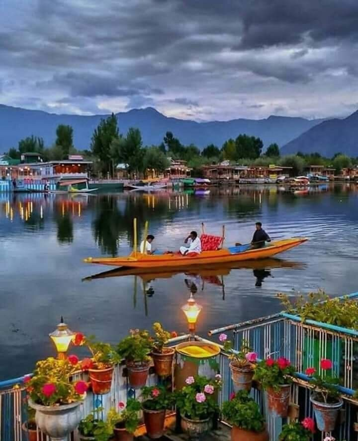

Estimated-trip cost:
₹ 10000-15000/-
Srinagar is the largest city and summer capital of the Indian union territory of Jammu and Kashmir. It is situated in the Kashmir Valley, at an elevation of 1,585 meters above sea level. Srinagar is famous for its beautiful gardens, houseboats, and the serene Dal Lake.
The city has a rich history and culture, with influences from various civilizations including Buddhist, Hindu, Mughal, and Sikh. Srinagar is also known for its handicrafts, especially its exquisite pashmina shawls, carpets, and papier mache products.
Some popular tourist attractions in Srinagar include the Mughal Gardens, Shankaracharya Hill, Hazratbal Shrine, and the floating vegetable market on Dal Lake. The city is also a base for exploring other destinations in the Kashmir Valley, such as Gulmarg, Pahalgam, and Sonamarg.